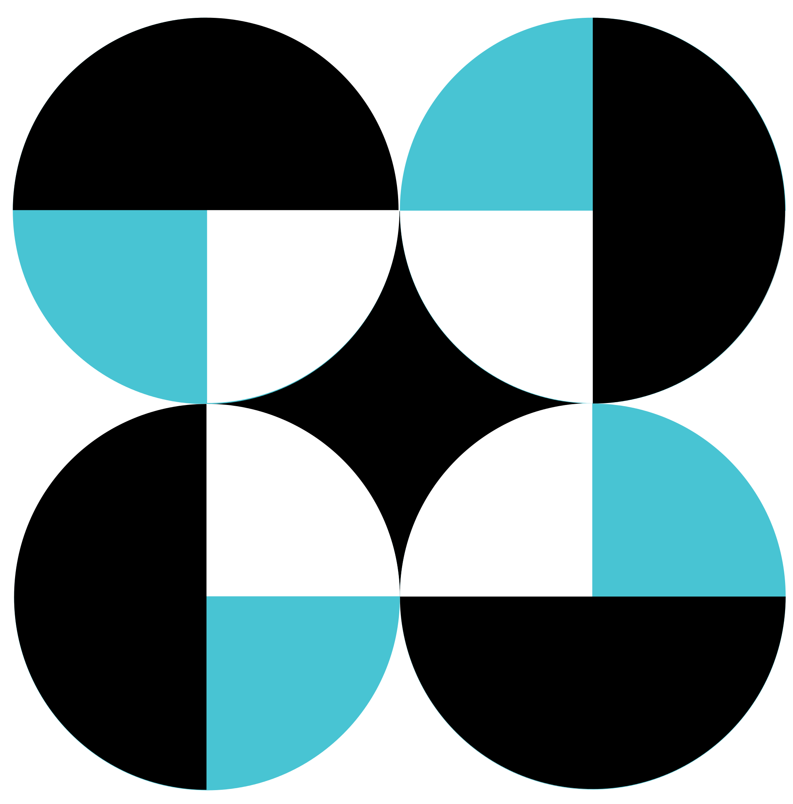

University of the Philippines

Department of Science and Technology
Philippine Council for Industry, Energy, and Emerging
Technology Research and Development
(DOST-PCIEERD)
Training Center for Applied Geodesy and Photogrammetry
(UP TCAGP)
Disaster Risk and Exposure Assessment for Mitigation (DREAM) Program
Nationwide Hazard Mapping of the Philippines Using LiDAR (PHIL-LiDAR 1) Program
Nationwide Detailed Resources Assessment Using LiDAR (PHIL-LiDAR 2) Program
©2019 DOST-UP DREAM and Phil-LiDAR Program. All Rights Reserved.